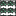
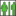

<!doctype html>
<html lang="en">
    <head>
        <meta charset="utf-8">
        <meta http-equiv="X-UA-Compatible" content="IE=edge">
        <meta name="viewport" content="initial-scale=1,user-scalable=no,maximum-scale=1,width=device-width">
        <meta name="mobile-web-app-capable" content="yes">
        <meta name="apple-mobile-web-app-capable" content="yes">
        <link rel="stylesheet" href="css/leaflet.css">
        <link rel="stylesheet" href="css/qgis2web.css"><link rel="stylesheet" href="css/fontawesome-all.min.css">
        <style>
        html, body, #map {
            width: 100%;
            height: 100%;
            padding: 0;
            margin: 0;
        }
        </style>
        <title>Cartographie des inondation dans le quartier de Niamakoro</title>
    </head>
    <body>
        <div id="map">
        </div>
        <script src="js/qgis2web_expressions.js"></script>
        <script src="js/leaflet.js"></script>
        <script src="js/multi-style-layer.js"></script>
        <script src="js/leaflet.rotatedMarker.js"></script>
        <script src="js/leaflet.pattern.js"></script>
        <script src="js/leaflet-hash.js"></script>
        <script src="js/Autolinker.min.js"></script>
        <script src="js/rbush.min.js"></script>
        <script src="js/labelgun.min.js"></script>
        <script src="js/labels.js"></script>
        <script src="data/Limite_Niamakoro_2.js"></script>
        <script src="data/Bati_3.js"></script>
        <script src="data/Caniveau_4.js"></script>
        <script src="data/Routes_5.js"></script>
        <script>
        var map = L.map('map', {
            zoomControl:true, maxZoom:28, minZoom:1
        })
        var hash = new L.Hash(map);
        map.attributionControl.setPrefix('<a href="https://github.com/tomchadwin/qgis2web" target="_blank">qgis2web</a> &middot; <a href="https://leafletjs.com" title="A JS library for interactive maps">Leaflet</a> &middot; <a href="https://qgis.org">QGIS</a>');
        var autolinker = new Autolinker({truncate: {length: 30, location: 'smart'}});
        var bounds_group = new L.featureGroup([]);
        function setBounds() {
            if (bounds_group.getLayers().length) {
                map.fitBounds(bounds_group.getBounds());
            }
        }
        map.createPane('pane_GoogleSatellite_0');
        map.getPane('pane_GoogleSatellite_0').style.zIndex = 400;
        var layer_GoogleSatellite_0 = L.tileLayer('https://mt1.google.com/vt/lyrs=s&x={x}&y={y}&z={z}', {
            pane: 'pane_GoogleSatellite_0',
            opacity: 1.0,
            attribution: '',
            minZoom: 1,
            maxZoom: 28,
        });
        layer_GoogleSatellite_0;
        map.addLayer(layer_GoogleSatellite_0);
        map.createPane('pane_OSMStandard_1');
        map.getPane('pane_OSMStandard_1').style.zIndex = 401;
        var layer_OSMStandard_1 = L.tileLayer('http://tile.openstreetmap.org/{z}/{x}/{y}.png', {
            pane: 'pane_OSMStandard_1',
            opacity: 1.0,
            attribution: '<a href="https://www.openstreetmap.org/copyright">© OpenStreetMap contributors, CC-BY-SA</a>',
            minZoom: 1,
            maxZoom: 28,
            minNativeZoom: 0,
            maxNativeZoom: 19
        });
        layer_OSMStandard_1;
        map.addLayer(layer_OSMStandard_1);
        function pop_Limite_Niamakoro_2(feature, layer) {
            var popupContent = '<table>\
                    <tr>\
                        <td colspan="2">' + (feature.properties['ID1'] !== null ? autolinker.link(feature.properties['ID1'].toLocaleString()) : '') + '</td>\
                    </tr>\
                    <tr>\
                        <td colspan="2">' + (feature.properties['NomQuartie'] !== null ? autolinker.link(feature.properties['NomQuartie'].toLocaleString()) : '') + '</td>\
                    </tr>\
                    <tr>\
                        <td colspan="2">' + (feature.properties['Geometry1_'] !== null ? autolinker.link(feature.properties['Geometry1_'].toLocaleString()) : '') + '</td>\
                    </tr>\
                    <tr>\
                        <td colspan="2">' + (feature.properties['AREA'] !== null ? autolinker.link(feature.properties['AREA'].toLocaleString()) : '') + '</td>\
                    </tr>\
                    <tr>\
                        <td colspan="2">' + (feature.properties['PERIMETER'] !== null ? autolinker.link(feature.properties['PERIMETER'].toLocaleString()) : '') + '</td>\
                    </tr>\
                </table>';
            layer.bindPopup(popupContent, {maxHeight: 400});
        }

        function style_Limite_Niamakoro_2_0() {
            return {
                pane: 'pane_Limite_Niamakoro_2',
                opacity: 1,
                color: 'rgba(35,35,35,1.0)',
                dashArray: '',
                lineCap: 'butt',
                lineJoin: 'miter',
                weight: 2.0, 
                fillOpacity: 0,
                interactive: false,
            }
        }
        map.createPane('pane_Limite_Niamakoro_2');
        map.getPane('pane_Limite_Niamakoro_2').style.zIndex = 402;
        map.getPane('pane_Limite_Niamakoro_2').style['mix-blend-mode'] = 'normal';
        var layer_Limite_Niamakoro_2 = new L.geoJson(json_Limite_Niamakoro_2, {
            attribution: '',
            interactive: false,
            dataVar: 'json_Limite_Niamakoro_2',
            layerName: 'layer_Limite_Niamakoro_2',
            pane: 'pane_Limite_Niamakoro_2',
            onEachFeature: pop_Limite_Niamakoro_2,
            style: style_Limite_Niamakoro_2_0,
        });
        bounds_group.addLayer(layer_Limite_Niamakoro_2);
        map.addLayer(layer_Limite_Niamakoro_2);
        function pop_Bati_3(feature, layer) {
            var popupContent = '<table>\
                    <tr>\
                        <th scope="row">Etat</th>\
                        <td>' + (feature.properties['Etat'] !== null ? autolinker.link(feature.properties['Etat'].toLocaleString()) : '') + '</td>\
                    </tr>\
                    <tr>\
                        <th scope="row">Type de construction</th>\
                        <td>' + (feature.properties['Type_const'] !== null ? autolinker.link(feature.properties['Type_const'].toLocaleString()) : '') + '</td>\
                    </tr>\
                    <tr>\
                        <th scope="row">Type d\'usage du bâtiment</th>\
                        <td>' + (feature.properties['Type'] !== null ? autolinker.link(feature.properties['Type'].toLocaleString()) : '') + '</td>\
                    </tr>\
                    <tr>\
                        <th scope="row">Distance du bâti à la rivière</th>\
                        <td>' + (feature.properties['Dist_appro'] !== null ? autolinker.link(feature.properties['Dist_appro'].toLocaleString()) : '') + '</td>\
                    </tr>\
                </table>';
            layer.bindPopup(popupContent, {maxHeight: 400});
        }

        function style_Bati_3_0(feature) {
            switch(String(feature.properties['Type'])) {
                case '1':
                    return {
                pane: 'pane_Bati_3',
                interactive: true,
            }
                    break;
                case '2':
                    return {
                pane: 'pane_Bati_3',
                interactive: true,
            }
                    break;
                case '3':
                    return {
                pane: 'pane_Bati_3',
                opacity: 1,
                color: 'rgba(255,96,17,1.0)',
                dashArray: '',
                lineCap: 'butt',
                lineJoin: 'miter',
                weight: 1.0, 
                fill: true,
                fillOpacity: 1,
                fillColor: 'rgba(255,96,17,1.0)',
                interactive: true,
            }
                    break;
                case '4':
                    return {
                pane: 'pane_Bati_3',
                interactive: true,
            }
                    break;
                case '5':
                    return {
                pane: 'pane_Bati_3',
                interactive: true,
            }
                    break;
                case '6':
                    return {
                pane: 'pane_Bati_3',
                interactive: true,
            }
                    break;
                case '7':
                    return {
                pane: 'pane_Bati_3',
                interactive: true,
            }
                    break;
                case '9':
                    return {
                pane: 'pane_Bati_3',
                interactive: true,
            }
                    break;
            }
        }
        map.createPane('pane_Bati_3');
        map.getPane('pane_Bati_3').style.zIndex = 403;
        map.getPane('pane_Bati_3').style['mix-blend-mode'] = 'normal';
        var layer_Bati_3 = new L.geoJson(json_Bati_3, {
            attribution: '',
            interactive: true,
            dataVar: 'json_Bati_3',
            layerName: 'layer_Bati_3',
            pane: 'pane_Bati_3',
            onEachFeature: pop_Bati_3,
            style: style_Bati_3_0,
        });
        bounds_group.addLayer(layer_Bati_3);
        map.addLayer(layer_Bati_3);
        function pop_Caniveau_4(feature, layer) {
            var popupContent = '<table>\
                    <tr>\
                        <td colspan="2">' + (feature.properties['id'] !== null ? autolinker.link(feature.properties['id'].toLocaleString()) : '') + '</td>\
                    </tr>\
                    <tr>\
                        <th scope="row">Nature du cours d\'eau</th>\
                        <td>' + (feature.properties['Type'] !== null ? autolinker.link(feature.properties['Type'].toLocaleString()) : '') + '</td>\
                    </tr>\
                    <tr>\
                        <th scope="row">Etat du fond du cours d\'eau</th>\
                        <td>' + (feature.properties['Fonds'] !== null ? autolinker.link(feature.properties['Fonds'].toLocaleString()) : '') + '</td>\
                    </tr>\
                    <tr>\
                        <th scope="row">Y a t il un pont?</th>\
                        <td>' + (feature.properties['Pont'] !== null ? autolinker.link(feature.properties['Pont'].toLocaleString()) : '') + '</td>\
                    </tr>\
                    <tr>\
                        <td colspan="2"><strong>Photo</strong><br />' + (feature.properties['Photo'] !== null ? '' : '') + '</td>\
                    </tr>\
                </table>';
            layer.bindPopup(popupContent, {maxHeight: 400});
        }

        function style_Caniveau_4_0(feature) {
            switch(String(feature.properties['Type'])) {
                case '1':
                    return {
                pane: 'pane_Caniveau_4',
                opacity: 1,
                color: 'rgba(72,123,182,1.0)',
                dashArray: '',
                lineCap: 'square',
                lineJoin: 'bevel',
                weight: 3.0,
                fillOpacity: 0,
                interactive: true,
            }
                    break;
                case '2':
                    return {
                pane: 'pane_Caniveau_4',
                opacity: 1,
                color: 'rgba(72,123,182,1.0)',
                dashArray: '',
                lineCap: 'round',
                lineJoin: 'round',
                weight: 3.0,
                fillOpacity: 0,
                interactive: true,
            }
                    break;
            }
        }
        map.createPane('pane_Caniveau_4');
        map.getPane('pane_Caniveau_4').style.zIndex = 404;
        map.getPane('pane_Caniveau_4').style['mix-blend-mode'] = 'normal';
        var layer_Caniveau_4 = new L.geoJson(json_Caniveau_4, {
            attribution: '',
            interactive: true,
            dataVar: 'json_Caniveau_4',
            layerName: 'layer_Caniveau_4',
            pane: 'pane_Caniveau_4',
            onEachFeature: pop_Caniveau_4,
            style: style_Caniveau_4_0,
        });
        bounds_group.addLayer(layer_Caniveau_4);
        map.addLayer(layer_Caniveau_4);
        function pop_Routes_5(feature, layer) {
            var popupContent = '<table>\
                    <tr>\
                        <td colspan="2">' + (feature.properties['id'] !== null ? autolinker.link(feature.properties['id'].toLocaleString()) : '') + '</td>\
                    </tr>\
                </table>';
            layer.bindPopup(popupContent, {maxHeight: 400});
        }

        function style_Routes_5_0() {
            return {
                pane: 'pane_Routes_5',
                opacity: 1,
                color: 'rgba(0,0,0,1.0)',
                dashArray: '',
                lineCap: 'round',
                lineJoin: 'round',
                weight: 8.0,
                fillOpacity: 0,
                interactive: true,
            }
        }
        function style_Routes_5_1() {
            return {
                pane: 'pane_Routes_5',
                opacity: 1,
                color: 'rgba(255,96,17,1.0)',
                dashArray: '',
                lineCap: 'round',
                lineJoin: 'round',
                weight: 6.0,
                fillOpacity: 0,
                interactive: true,
            }
        }
        map.createPane('pane_Routes_5');
        map.getPane('pane_Routes_5').style.zIndex = 405;
        map.getPane('pane_Routes_5').style['mix-blend-mode'] = 'normal';
        var layer_Routes_5 = new L.geoJson.multiStyle(json_Routes_5, {
            attribution: '',
            interactive: true,
            dataVar: 'json_Routes_5',
            layerName: 'layer_Routes_5',
            pane: 'pane_Routes_5',
            onEachFeature: pop_Routes_5,
            styles: [style_Routes_5_0,style_Routes_5_1,]
        });
        bounds_group.addLayer(layer_Routes_5);
        map.addLayer(layer_Routes_5);
            var title = new L.Control();
            title.onAdd = function (map) {
                this._div = L.DomUtil.create('div', 'info');
                this.update();
                return this._div;
            };
            title.update = function () {
                this._div.innerHTML = '<h2>Cartographie des inondation dans le quartier de Niamakoro</h2>';
            };
            title.addTo(map);
        var baseMaps = {};
        L.control.layers(baseMaps,{' Routes': layer_Routes_5,'Caniveau<br /><table><tr><td style="text-align: center;"></td><td>Naturel</td></tr><tr><td style="text-align: center;"></td><td>Artificiel</td></tr></table>': layer_Caniveau_4,'Bati<br /><table><tr><td style="text-align: center;"></td><td>Ecole</td></tr><tr><td style="text-align: center;"></td><td>Centre de Santé</td></tr><tr><td style="text-align: center;"></td><td>Cimétière</td></tr><tr><td style="text-align: center;"></td><td>Pharamcie</td></tr><tr><td style="text-align: center;"></td><td>Restaurant</td></tr><tr><td style="text-align: center;"></td><td>Hotel</td></tr><tr><td style="text-align: center;"></td><td>Autre</td></tr><tr><td style="text-align: center;"></td><td>Habitat</td></tr></table>': layer_Bati_3,' Limite_Niamakoro': layer_Limite_Niamakoro_2,"OSM Standard": layer_OSMStandard_1,"Google Satellite": layer_GoogleSatellite_0,},{collapsed:false}).addTo(map);
        setBounds();
        </script>
    </body>
</html>
